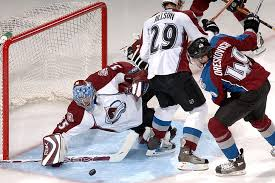
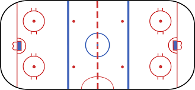
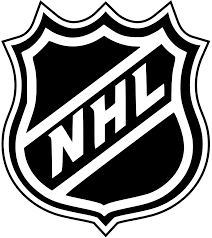

First you have to learn what hockey is. It's a great sport that involves a lot of action, it is a sport where you are trying to score a goal in the other team's net. The players fight for the puck to score a goal. Let's learn what's on the rink. If we're going left to right you can see that there is the goal line and the goal - where the other team is trying to score at. Next you see the blue line - this is about the same thing as a dotted line in soccer. Then there is the red line - this divides the two different sides of the rink. There is another blue line and another goal line. There are many different rules to follow when playing hockey. One is that you can't shoot the puck from one blue line to the other far goal line. This is called icing. Now let's learn what the circles mean. The two red circles between each blue line and goal line is for when the goalie catches the puck they have a faceoff on the dot - a faceoff is when the referee drops the puck and the two teams try to get it. There is also a big circle in the middle; this is for the faceoff at the beginning of each period - there are three - and for each time you score. The little dots in between the two blue lines are for when offside is called. Offside is when there are people inside the blue line and the end of the rink, and the puck goes out of the blue line and comes back in with the people still inside. Lastly there is the goalie crease. This crease is like the space for the goalie.
Photo by unknown from unknown.

Photo by unknown from Openclipart.
The Avalanche are a team in the National Hockey League (NHL). Learn more at my links at the top of this page.
